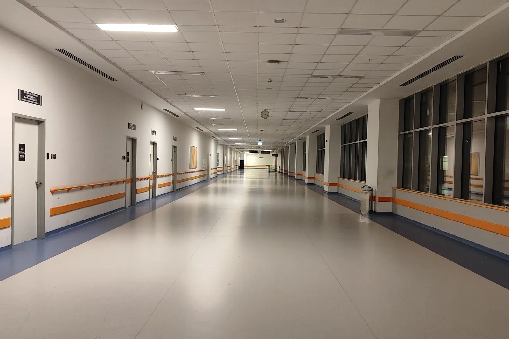
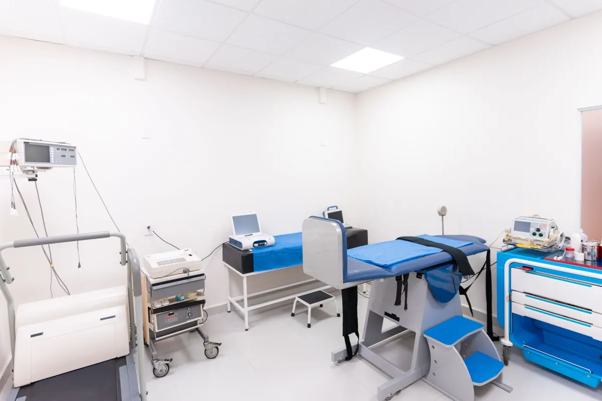
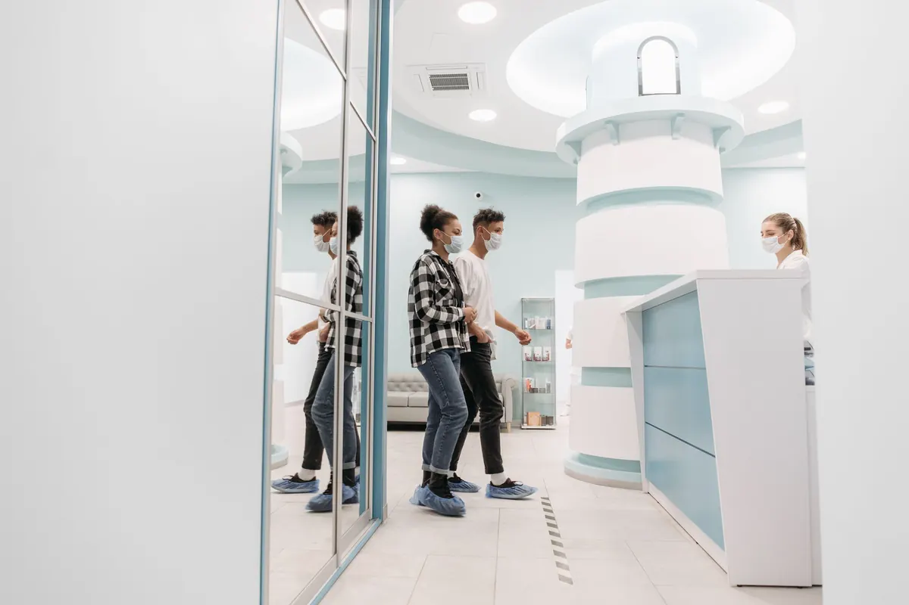
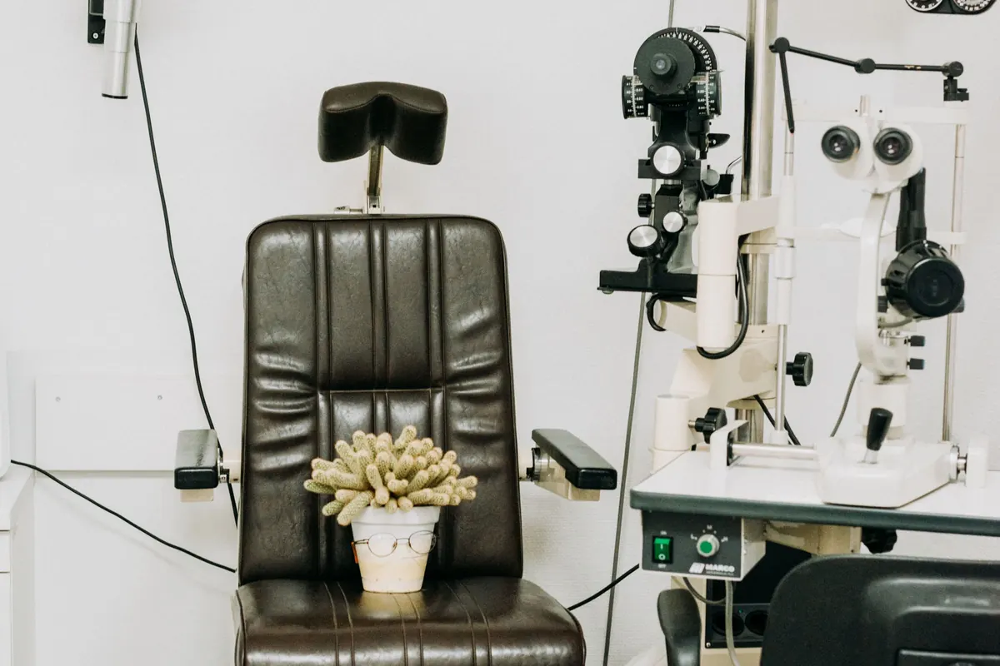

Tıp merkezi · 9 poliklinik · laboratuvar
Randevunuz hazır,
sonucunuz telefonunuzda.
Dahiliye, kardiyoloji, kadın doğum, çocuk sağlığı ve daha fazlası tek binada. Randevu, tahlil sonucu ve kontrol hatırlatması WhatsApp'tan.
Tıp merkezi · Muratpaşa / Antalya
Bölümler
Muayene ve tetkikler hekim değerlendirmesiyle planlanır.
- 01Dahiliye (iç hastalıkları)
Genel muayene, kronik hastalık takibi, check-up planlaması.
- 02Kardiyoloji
EKG, efor testi ve ekokardiyografi ile değerlendirme.
- 03Kadın hastalıkları ve doğum
Rutin muayene ve gebelik takibi.
- 04Çocuk sağlığı
Gelişim takibi ve aşı takvimi.
- 05Göz hastalıkları
Göz muayenesi ve görme testi.
- 06Laboratuvar ve görüntüleme
Kan tahlili, ultrason, röntgen.
Sağlık mevzuatı gereği sitede fiyat, hasta yorumu ve sonuç vaadi yer almaz.



Hakkımızda
Merkez hakkında
Muratpaşa'da 2015'ten beri hizmet veren tıp merkezi. Randevu, sonuç ve kontrol takibi tek sistemde; hasta çağrı merkezinde beklemez.
Tahlil sonuçları hazır olunca bilgilendirme mesajı gider; sonucu hekiminiz değerlendirir.
Ekip (örnek)
- Uzm. Dr. Levent A.dahiliye
- Uzm. Dr. Nihan K.kardiyoloji
- Op. Dr. Sibel T.kadın hastalıkları ve doğum
- Uzm. Dr. Cem Y.çocuk sağlığı
Sık sorulanlar
Merak edilenler
Randevuyu nasıl alırım?
WhatsApp'tan bölüm ve gün yazmanız yeterli; boş saatler anında sunulur.
Tahlil sonuçlarım ne zaman çıkar?
Çoğu sonuç aynı gün çıkar; hazır olunca size mesaj gelir, hekiminiz değerlendirir.
Özel sigortamla gelebilir miyim?
Anlaşmalı sigortaların listesi için çağrı merkezimize yazabilirsiniz.
İletişim
Bize ulaşın
- AdresFener Mah., Tekelioğlu Cd. · Muratpaşa / Antalya (örnek adres)
- SaatlerPzt–Cmt 08:30–20:00 · Laboratuvar 07:30'da açılır
- Telefon0242 ••• •• •• (örnek)
- WhatsAppasistanı deneyin ↓